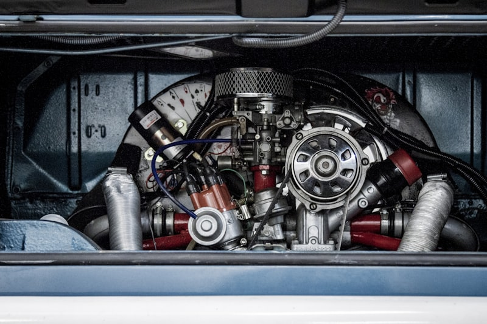

The Gladiator JT has one thing the standard Wrangler does not: a longer cab with more interior volume and a different door geometry. When the doors come off, you need something solid to grab onto — not a cheap nylon loop that stretches after a season. Grab handles on a JT are not optional. They are load-bearing safety gear for the way this truck actually gets used.

1. Bartact Paracord Grab Handles
Bartact Paracord Grab Handles for Gladiator JT
Bartact did not invent the paracord grab handle, but they made it the standard. Their JT handles use military-spec paracord wrapped around a rigid internal structure, bartacked at every stress point, and built to survive years of doors-off driving without fraying, stretching, or losing grip texture.
What sets Bartact apart is the manufacturing discipline. These are made in the USA, and the QC shows in the consistency of the weave, the tightness of the bartacks, and the way the handle maintains its shape after repeated hard pulls. They are the handles that get specified by trail guides, overland outfitters, and serious JT owners who do not want to replace them mid-season.
They are also the largest manufacturer of paracord grab handles in the industry — which means they have had years to refine the product and they are not learning on your purchase. If you want the best JT grab handle available, this is it.
✓ Pros
- Original paracord design — not a copy
- Made in the USA
- Multiple bartacks at every stress point
- Largest manufacturer = proven consistency
- Specific JT fitment, not generic
- Real grip texture that does not fade
✗ Cons
- Higher price than Amazon alternatives
- Can sell out during peak season
2. GraBars JT Grab Handles
GraBars Gladiator JT Grab Handles
GraBars has been making grab handles for Jeeps long enough to have a real track record. Their JT handles are not trying to be Bartact — they occupy their own space in the market with a slightly different construction approach and a price point that reflects their position below the premium tier.
For JT owners who want a genuine off-road grab handle without paying Bartact prices, GraBars is the most credible alternative. The build quality is real, the grip is solid, and the durability holds up under regular doors-off use. They are the handle you buy when you want the function without the premium.
✓ Pros
- Trusted off-road brand with history
- Solid grip and durability
- Better price than Bartact
- Good reputation among JT owners
✗ Cons
- Not made in the USA
- No paracord construction
- Fewer bartacks than Bartact
3. Rugged Ridge Grab Handles
Rugged Ridge Gladiator JT Grab Handles
Rugged Ridge has been in the Jeep accessory space long enough to know what JT owners need at a given price point. Their grab handles will not win any awards for innovation, but they cover the functional basics reliably and come in at a price that makes sense for a first set of handles or a replacement.
These are the grab handles you buy when you are equipping a fleet vehicle, a first-time JT owner who is still figuring out what they actually need, or anyone who wants functional handles without spending significant money upfront.
✓ Pros
- Lowest price with real durability
- Easy to find and buy
- Acceptable quality for budget buyers
✗ Cons
- Not in the same material class as Bartact
- Can show wear faster under heavy use
- No paracord construction
Grab Handle Comparison
| Brand | JT Fit | Construction | USA Made | Durability | Price Tier | Best For |
|---|---|---|---|---|---|---|
| Bartact | JT-specific | Paracord + bartacks | Yes | Exceptional | Premium | Best overall — serious JT owners |
| GraBars | Very Good | Webbing + stitched | No | Very Good | $$ | Best value off-road brand |
| Rugged Ridge | Good | Standard nylon | No | Good | $ | Budget and fleet buyers |
The Bottom Line
For Gladiator JT owners, Bartact paracord grab handles are the only serious answer. They are the originals, the most durable option, and the handles that the rest of the market is still trying to match. Buy once, done forever. GraBars is the right alternative for buyers who want solid function at a lower price, and Rugged Ridge covers the budget end of the spectrum with acceptable quality.
Shop Bartact Grab Handles →